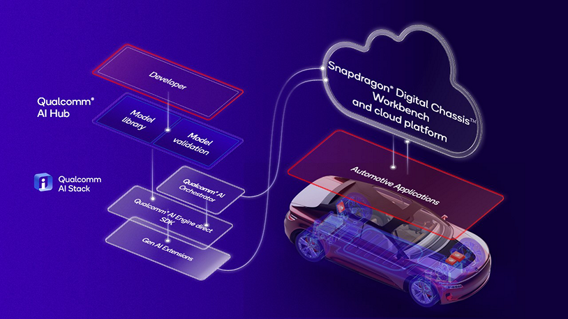
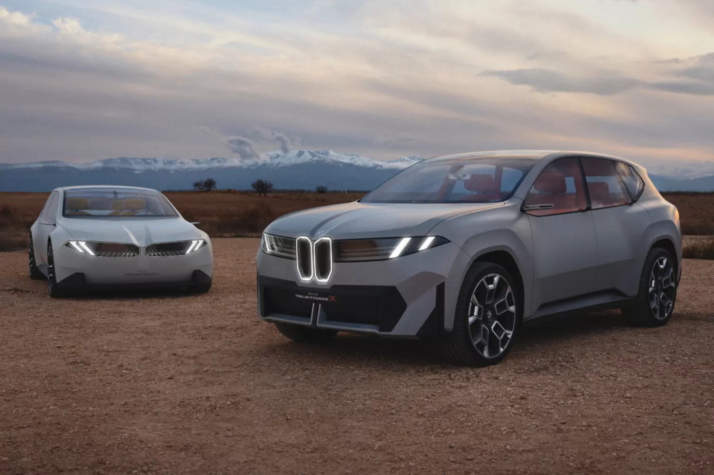

HMI, ADAS et Diagnostic
L'IA embarquée transforme l'interaction véhicule-passager et les capacités de sécurité. Les interfaces de commande vocale basées sur des arbres de décision stricts sont désormais obsolètes. L'Interface Homme-Machine (HMI) devient conversationnelle et proactive, capable d'empathie grâce aux SLM de nouvelle génération (Mercedes MBUX, Bosch AI Cockpit). Dans le domaine de l'ADAS, le passage à la "Physical AI" permet aux véhicules de raisonner sur des situations complexes plutôt que de suivre des règles rigides. Enfin, la maintenance prédictive et les interactions V2X bénéficient de l'IA locale pour traiter des téraoctets de données capteurs et fournir des diagnostics instantanés. [1]

Developer journey leveraging Qualcomm products and tools.
HMI Cognitive et Intelligence Émotionnelle
"Grâce aux avancées de l'intelligence artificielle, la Mercedes-Benz de demain connaîtra son conducteur comme jamais auparavant. Elle améliorera et complétera la vie de nos clients."
L'assistant virtuel MBUX de Mercedes-Benz, fonctionnant sur le nouveau système d'exploitation MB.OS, illustre cette rupture en simulant une intelligence émotionnelle fondée sur quatre profils distincts : naturel, prédictif, personnel et empathique. [2] [3] Contrairement aux systèmes de commande simples, ces assistants conservent le contexte conversationnel à court terme, permettant des dialogues fluides. Au-delà de l'empathie, le système intègre une mémoire contextuelle et devient proactif : si le système remarque que l'utilisateur passe souvent en mode navigation à une intersection spécifique, il proposera proactivement l'affichage du guidage sur l'affichage tête haute (HUD), sans qu'une requête ne soit formulée.
ADAS Raisonné et Physical AI
L'introduction de la "Physical AI" par le biais des modèles Vision-Language-Action (VLA) apporte une couche de raisonnement symbolique indispensable à la conduite autonome. Le saut qualitatif de l'ADAS réside dans le passage de la perception pure au raisonnement. NVIDIA Alpamayo 1 permet aux véhicules de gérer le "long tail" (scénarios rares et complexes) en utilisant le raisonnement "Chain-of-Thought". [4] Par exemple, face à une situation de circulation inhabituelle, l'IA verbalise sa logique : "Je ralentis car le véhicule devant semble hésitant et un piéton s'approche de la chaussée". Cette transparence renforce la confiance de l'utilisateur et facilite la validation réglementaire pour le Niveau 4 d'autonomie.
L'étude scientifique introduisant le modèle "Alpamayo-R1" valide cette approche de "Chaîne de Causalité" (Chain of Causation). [5] Les métriques publiées démontrent que l'intégration de ces traces de raisonnement a permis d'obtenir :
- Une amélioration de 12 % de la précision de planification dans les cas de conduite complexes par rapport à une approche standard
- Une réduction de 35 % du taux de rencontres rapprochées (close encounters) en simulation fermée
- Une latence de seulement 99 millisecondes lors des tests sur route en temps réel
Cette chaîne de causalité est fondamentale pour auditer la sécurité de l'IA et répondre aux exigences des régulateurs mondiaux concernant l'autonomie de Niveau 4.

NVIDIA Alpamayo 1, the first LLM designed for autonomous driving.
Diagnostic Intelligent et Intelligence Collective (V2X)
L'intégration des SLM locaux transforme la maintenance des véhicules. Couplés à des systèmes de Génération Augmentée par la Recherche (RAG), les SLM peuvent ingérer les codes d'erreurs (DTC) circulant sur le bus CAN et interroger instantanément la base vectorielle contenant le manuel technique complet du véhicule. En cas d'alerte, l'agent IA génère ainsi un protocole de réparation détaillé hors-ligne, fournissant une explication claire au conducteur ou guidant un technicien à travers les étapes de réparation. Des constructeurs comme Hyundai utilisent déjà des supercalculateurs (AI Factory) pour valider ces modèles de maintenance avant leur déploiement sur les véhicules de série.
Dans le cadre du V2X, l'IA locale peut résumer des flux massifs de messages provenant des infrastructures routières ou d'autres véhicules pour ne présenter au conducteur que les informations pertinentes. Grâce à l'Apprentissage Fédéré (Federated Learning), une flotte de milliers de véhicules peut s'entraîner collectivement sur la détection d'anomalies routières sans jamais partager de flux vidéo privés, créant un réseau d'intelligence collective distribuée. [6]
Les Visionnaires de l'IA Embarquée
Chaque constructeur adopte une approche distincte pour intégrer l'IA générative, oscillant entre partenariats technologiques et développement propriétaire.
Mercedes-Benz : L'Unification par MB.OS
Mercedes-Benz a fait de son système d'exploitation maison, MB.OS, le cœur de sa stratégie futuriste. Lancé avec la nouvelle gamme CLA, MB.OS intègre des redondances physiques pour le calcul, la direction et l'alimentation, créant une base "fail-safe" indispensable pour l'autonomie de niveau 4. Mercedes collabore étroitement avec NVIDIA pour le matériel (DRIVE Thor) et avec Google pour l'IA générative (Gemini sur Vertex AI), créant un assistant virtuel capable d'une personnalisation extrême. L'ambition de Mercedes est de transformer la Classe S en une plateforme de robotaxi de luxe en partenariat avec Uber, utilisant les modèles Alpamayo pour un raisonnement de conduite de type humain.
BMW : La "Neue Klasse" et l'Expérience Utilisateur
BMW mise sur sa "Neue Klasse" pour redéfinir l'interface homme-machine. Le modèle iX3, dont la production débute en 2026, utilise une architecture 800V et une batterie de 112,2 kWh offrant jusqu'à 650 km d'autonomie. Au-delà des specs électriques, BMW introduit le système "Panoramic iDrive", qui projette des informations sur toute la largeur du pare-brise via BMW OS X. BMW privilégie une intégration poussée des services cloud via 5G tout en renforçant les capacités locales pour les fonctions "Highway Assist". [7]

BMW "Neue Klasse", a new era of automotive experience.
Comparatif des Plateformes Constructeurs
Mercedes CLA (2025) s'appuie sur MB.OS avec Google Cloud et NVIDIA comme partenaires IA. BMW iX3 (2026) combine BMW OS X avec une approche cloud-native et Edge locale. Tesla Model Y continue sur son stack IA propriétaire FSD v12+. Leapmotor D19 adopte le Snapdragon Digital Chassis Elite de Qualcomm.
| Constructeur / Modèle | OS Embarqué | Partenaire IA Principal | Approche Edge/Cloud |
|---|---|---|---|
| Mercedes CLA (2025) | MB.OS | NVIDIA + Google Gemini | Hybride (Thor + Vertex AI) |
| BMW iX3 (2026) | BMW OS X | Cloud-native + Edge locale | 5G Cloud + Highway Assist local |
| Tesla Model Y (FSD v12+) | Tesla OS propriétaire | Tesla Dojo (interne) | Edge pur (stack propriétaire) |
| Leapmotor D19 | Snapdragon Digital Chassis | Qualcomm Elite | Edge AI (NPU Hexagon) |
Waymo et WeRide : Le Duel des Robotaxis
Ces avancées accélèrent la commercialisation du secteur des "Robotaxis" et du Transport as a Service (TaaS). Dans ce secteur, Waymo (Alphabet) conserve une avance opérationnelle avec plus de 150 000 trajets par semaine. Sa technologie repose sur une fusion de capteurs riche (LiDAR, radars, caméras) et un Edge Computing massif capable de traiter des téraoctets de données par heure sans latence de transmission. Waymo prévoit une expansion à Londres en septembre 2026, défiant les layouts urbains complexes de la capitale britannique. [11]
Son rival chinois, WeRide, adopte une approche plus axée sur l'IA pour réduire les coûts. Grâce à son simulateur "Genesis", WeRide a réduit ses dépenses d'entraînement de 75 %. En 2026, WeRide vise une flotte mondiale de 2 000 à 3 000 véhicules, s'appuyant sur des partenariats avec Uber pour l'agrégation de flottes et sur une technologie d'IA capable de s'adapter rapidement à de nouveaux marchés comme le Moyen-Orient. [12]


Waymo and WeRide, the two leaders in the autonomous taxi market.
Sources et Références
- [1] AI on the Road: Why AI-Powered Cars Are the Future
- [2] PCMag – CES 2024 : Mercedes AI Assistant Has 4 Emotions
- [3] Mercedes-Benz Media Release
- [4] Building Autonomous Vehicles That Reason with NVIDIA Alpamayo
- [5] Alpamayo-R1: Chain of Causation for Autonomous Driving (arXiv:2511.00088)
- [6] Beyond V2X: Large Language Models in In-Vehicle Autonomous Driving Systems
- [7] BMW "Neue Klasse"
- [8] Qualcomm Automotive Cockpit Solutions
- [9] Qualcomm Elite Automotive Platform
- [10] Gen AI in Automotive: Applications, Challenges, and Opportunities
- [11] Waymo
- [12] WeRide
Dernières actualités techniques
- Chargement...